similar.
If the boot and strain relief are not correctly
oriented, stop now and fi x it, even if it means
redoing the whole process. There ’s simply no
other way. It ’s either right or it ’s done again,
until it is right.
Figure 3.6.44 Ready to assemble – 1.

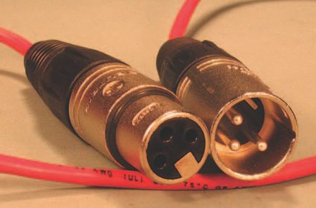
262
Audio Wiring Guide
Figure 3.6.45 is the same view as Figure 3.6.44,
with the outer shell added. On to assembly
( Figure 3.6.46 )!
Push the plug and strain relief into the outer metal
shell. Screw the plastic boot down to tighten the
strain relief. These particular instructions apply
Figure 3.6.45 Ready to assemble – 2.
to a Neutrik XLR connector, but other types are
similar in use.
There ’s typically some type of strain relief, and a
way to tighten/loosen it, a way to secure the plug
to the shell, and a boot to help support the wire
where it enters the connector. The completed
connectors are shown in Figure 3.6.47 .
That ’s it, gang. ‘ That ’s all she wrote ’ – or maybe
I should say ‘ wired ’ . Now it ’s time to whip out
that VOM you bought after I told you to do so in
Section 1. If you really read the whole book, you ’ ll
recall a mini-course in how to use it (the VOM) that
was part of Section 2. You ’ ll even remember what
VOM, or DVOM, stands for.
Figure 3.6.46 Final assembly.
Figure 3.6.47 Completed XLR connectors.
Test your work, check it for shorts and high-resistance solder points. If it all checks out, enjoy your new connections!
3.7
I can almost hear it – the question bubbling in all your brains, ‘ What the heck does the TT stand for? ’ There ’s actually an answer that makes sense; it stands for ‘ Tiny Telephone ’ . They are sometimes also called ‘ bantam ’ plugs – but I can’t tell you where that comes from.
Remember those old telephone switchboards your grandmother worked
on? They used a {1/4} inch diameter plug called a ‘ telephone ’ plug. Its construction was similar to a regular guitar plug, but it had a different shape for the tip of the plug, and also for the ring section.
The shape was different enough that guitar plugs and telephone plugs were not interchangeable. T-plugs don ’t make good tip contact in G-plug jacks, and putting a G-plug in a T-plug jack will stretch the contacts. But neither of those facts kept people from trying to put A into B, and vice versa. So there was a consistent stream of damaged connectors, often in diffi cult-to-repair places.
Old-school ‘ telephone ’ plugs had another, even bigger problem – they were too big! The maximum number you could fi t in a 19-inch rack space was 24
or 26 connectors, depending on how tightly you spaced them together. As patch bays grew in size, especially with ever-larger track formats, the old plug style made patch-bay installations a fl oor-to-ceiling affair – not very workable.
Along came the design for the TT plug, and patch bays to match it. Since the TT plug is roughly half the size of a T-plug, bays could double in density for the same space. The old standard of two rows with 24 jacks each was now doubled, becoming two rows with 48 jacks each, in a 1.75 inch height (one RU – or rack unit) space. Patch bays became small enough to be
mounted within recording consoles, where they were more convenient and ergonomic. And as an added benefi t, there was no way that people could plug anything but a TT plug into a TT patch bay. Nothing else in the whole world fi ts.
264
Audio Wiring Guide
But the smaller size of TT plugs and jacks makes them much harder to wire, and demands greater skill on the part of the wireperson. The TT is the most complicated of the soldered plugs I describe, so I ’ ve deliberately left it until last. If you ’ re new to wiring, allow yourself extra time (and materials) to learn the skills you ’ ll need for it.
I show the wiring of a TT male, as this is typically what you ’ d be wiring in the fi eld. Patch bays (the females) are not within the scope of this book. If we sell lots of copies of the AWG, maybe we can do an ‘advanced connectors ’
version. So tell all your friends to buy this book if you ever want to know about patch bays themselves.
The typical real-world situation is that you ’ d like to plug something into a TT
patch bay – maybe a synth output, a guitar effects box or a mic preamplifi er.
Or you ’ d like to get an output from a TT bay for an audio feed to your video camera, to connect your mini-disk recorder input, or for a myriad of other reasons.
Either way, you ’ re going from a (frequently) balanced audio realm – the patch bay – into other equipment that may be either balanced or unbalanced. I show the wiring of the TT for a balanced/stereo connection, i.e. tip, ring and shield.
Your particular gizmo may be happy with a balanced TT to stereo guitar or whatever connector. Or your gizmo may require shorting ring to ground, or using only tip and shield. It varies from unit to unit, there ’s no overall rule.
If you wind up not using ring, or jumpering ring/low and shield, I suggest you do it at the gizmo end of your wire. Any other kind of plug is easier to wire – and re wire – than a TT.
Having thoroughly intimidated you with the diffi culty of the TT connector, let me now show you how to master it – in only 68 easy steps!
Being such a tiny plug, there ’s a lot of info in Figure 3.7.1 – let ’s examine it.
On the right-hand side we see the ball-shaped tip and then (moving leftward) the cylindrically shaped ring section, then the long barrel (shield) of the plug.
Figure 3.7.1 Plug with no sleeve.
3.7 TT male connectors
265
In the middle of the plug, we have the black plastic (insulation) section, in which are two solder cups. The right-hand cup is for the tip, the left-hand cup is for the ring. There is no solder cup for the shield – we will have to create one later.
Those of you with eagle eyes will have noticed that the right-hand solder cup is convex, rather than concave. These kinds of things are known in the trade as ‘ design fl aws ’ . They occur often enough for there to be a name for them. We can only wonder what the designer was smoking that day, and
deal with the result. The lack of a solder cup for the shield is another design fl aw.
Further, each manufacturer of TT plugs makes their fl avor of the plug with a slightly different confi guration, requiring slightly different techniques. I ’ ve chosen a Neutrik variation here, which is as typical as any other.
Figure 3.7.2 is just for reference – we won ’t be using the outer TT insulating sleeve, because we ’ re using a large-diameter wire and heat-shrink instead of the sleeve. However, if you ’ re using a smaller diameter wire, you might want to use the TT ’s sleeve for the outside covering. Small-diameter wire can Figure 3.7.2 Plug with sleeve.
be ‘ built up ’ with several small layers of heat-shrink to match the internal diameter of the TT at the rear of the plug.
We ’ ll come back to the TT plug very soon. First, let ’s play with some wire.
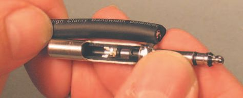

266
Audio Wiring Guide
Wrap the wire fi rmly around your
hand ( Figure 3.7.3 ). This prevents
the individual conductors from
being pulled out when they are
stripped, and is only needed on
short lengths of wire. If the wire is
already harnessed or strain-reliefed,
you don ’t have to wrap it around
your hand.
Since different makes of plugs will
have different lengths, you should
measure the amount of outer jacket
to be cut away against the plug itself
Figure 3.7.3 Wrap wire around hand.
( Figure 3.7.4 ). With this particular
plug, we get a length to cut back of
{1.375} inch. We ’ re stripping back a
little more then we need to, so we
can have some slack to play with.
Note that by placing my thumbnail
at the point being measured, I can
guide my stripping tool safely to
the exact spot I want. This makes
it easier to strip back an accurate
distance each time.
Figure 3.7.4 Measure against plug – 1.
Still holding my thumb in position, I verify that {1.375} inch strip length ( Figure 3.7.5 ). You could also call it a {1 and 3/8} inch strip, if that ’s easier.
Figure 3.7.5 Measure against plug – 2.
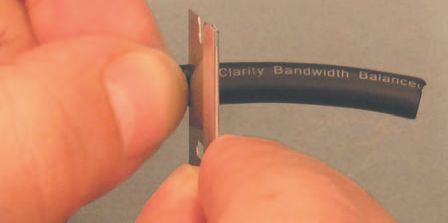

3.7 TT male connectors
267
The wire I ’ m using for this example is two-conductor shielded Monster, one of the highest quality types available. Like many larger diameter wire types, it has a thick, rubbery outer jacket, which cuts more cleanly with a razor blade than with a pair of wire strippers ( Figure 3.7.6 ). However, should you prefer, stripping the outer jacket off with wire strippers is also fi ne.
If using a blade, gently rock it at a right angle to the wire and then, using a light slicing motion, spin the blade around the wire, keeping it at a right angle at all times. This technique will create a super-clean cut of the outer jacket and, if done gently, will not harm the strands of the shield conductor that lie just inside the outer jacket.
Figure 3.7.6 Cut outer jacket with razor blade.
Figure 3.7.7 Break open razor cut.
Gently bend the cut in all directions to break away any slivers of the outer jacket that still connect both sides ( Figure 3.7.7 ). If needed, cut the slivers lightly with the razor blade. The break should be complete on all sides.
This particular wire is very supple, and the outer insulation jacket can just be pulled off ( Figure 3.7.8 ). One of my crude arrows helps illustrate the direction to pull. If the outer jacket is sticking to the shield, then you have to cut it lengthwise (see the details in Figure 3.1.8). I ’ m breaking my own rule about fl ipping – but this wire behaved itself and didn ’t need the additional cut.
Figure 3.7.8 Pull end off.
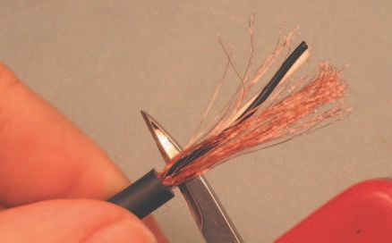
268
Audio Wiring Guide
This particular Monster shield is not tinned, and is loosely woven, so it ’s fl exible and easy to unbraid, unlike some other shields. I was good – I didn ’t press too hard with the razor blade – so none of the strands are broken.
Using any convenient small pointy object, carefully unbraid the shield strands ( Figure 3.7.9 ). Do this one or two overlaps at a time; don ’t try to do a whole bunch at once – you ’ ll break strands. As you can see in the picture, the awl blade on a Swiss Army knife is ideal for this operation. Note that I ’ m using the blunt edge of the awl to pull through the strands – there is less chance of breaking them that way.
Figure 3.7.9 Unbraiding shield – 1.
Keep going, keep going – it won ’t take long. Work all the braiding out of the shield strands, right down to where they break out from the outer jacket ( Figure 3.7.10 ). This particular wire is very civilized, with no fuzz, string or plastic wrapper – just the three conductors. You might not be so lucky – be prepared for a little clean-up. Trim all leftover insulation as tightly as possible, without harm to the conductors.
Figure 3.7.10 Unbraiding shield – 2.

3.7 TT male connectors
269
Hold the wire in your hand (or a vise), and smooth out the strands of shield so they lie fl at ( Figure 3.7.11 ). The goal is to make a thin, broad surface to solder onto the strain relief. Think of a strip of paper lying limply – not a twisted rope, as one might be tempted to make.
Figure 3.7.11 Smoothing out shield.
Now that you ’ ve got those shield strands lying obediently fl at, you need a trick to keep them that way. At the end of the shield strands, twist them around each other in a circular motion ( Figure 3.7.12 ). This will leave the bulk of the strands lying fl at, and fl exible, but keep the whole bundle of strands together for soldering.
Figure 3.7.12 Twist shield at end.
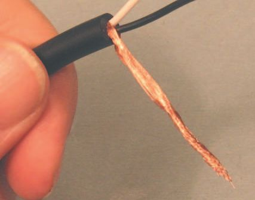

270
Audio Wiring Guide
Figure 3.7.14 Solder twist in shield.
Figure 3.7.13 Twist shield detail.
Figure 3.7.15 Shield solder detail.
Figure 3.7.13 is a fl y ’s eye view of the twist at the end of the shield. Now we need some way to keep it twisted – which brings us to Figure 3.7.14 .
Solder the shield conductors at the twisted point. Use only enough solder to keep the strands together at the twist. Don ’t let the solder run into the fl at portion you created – that would make the shield stiff, when we need it to be fl exible.
See in Figure 3.7.15 how the soldered area is localized to the twisted strands? This leaves the rest of the shield fl exible for later work.


3.7 TT male connectors
271
In Figure 3.7.16 I ’ m cutting the end of some layout tape (also called ‘artist ’s tape’) so it will lie fl at when I wrap it around the exposed conductors. The next operations are somewhat violent, and one mis-cut could damage the delicate conductors.
Measure a little past the ends of the conductors, and cut the layout tape ( Figure 3.7.17 ). This is not a critical length, just cover the conductors. Then roll the layout tape around the conductors to create a temporary protective covering. Think of a lobster-bib for wire.
The well-wrapped (and protected) conductors are shown in Figure 3.7.18 .
They are able to withstand minor abuse in assembly. The layout tape comes off easily when no longer needed.
Figure 3.7.16 Cover conductors – 1.
Figure 3.7.17 Cover conductors – 2.
Figure 3.7.18 Cover conductors – 3.
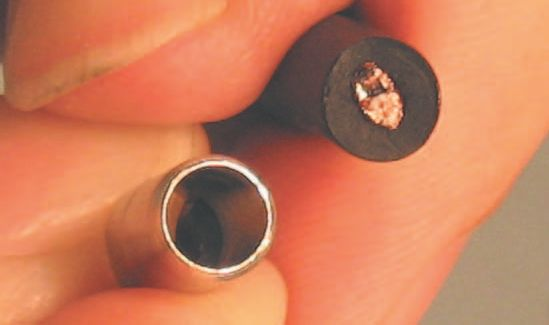
272
Audio Wiring Guide
Figure 3.7.19 Wire vs. plug diameter.
In Figure 3.7.19 we see one of the reasons for the layout tape: the diameter of the outer jacket on the Monster wire is larger than the diameter of the wire entry point at the rear of the TT plug. Even worse, the spacing on TT patch bays is so tight that more than a tiny buildout on the plug will interfere with plugs next to it. Well, if you can ’t raise the bridge, lower the river. We can make the outer jacket fi t if we carefully carve it with a sharp razor blade, to reduce its diameter.
The next question is how far back to carve the outer jacket? By comparing the plug with the jacket, I can see that carving back to the zero to the left of the dot, just left of the word ‘ Ultra ’ , will give me enough carved length for a good fi t ( Figure 3.7.20 ).
Figure 3.7.20 Length to carve back.


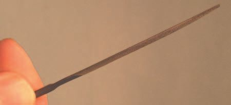
3.7 TT male connectors
273
Figure 3.7.21 Carve jacket – 1.
Figure 3.7.22 Carve jacket – 2.
Figure 3.7.23 Carve jacket – 3.
Figure 3.7.24 Triangular needle fi le.
In Figure 3.7.21 I ’ ve got the wire lying fl at on the table, the razor blade is cutting away from my fi ngers, and the blade is lying fl at against the wire, to help guide the cut. I ’ ll cut this section and then rotate the wire to do another.
I ’ ll keep going until I ’ ve gone all the way around the outer jacket.
In Figure 3.7.22 I ’ ve shifted the position of my hands, but the rules are the same – cut away from your own fi ngers and cut many little slices, rather than a few big ones.
The fi nished carving is shown in Figure 3.7.23 . No one will hire me for fi ne sculpture, but it ’s great for a TT plug. Notice that I ’ ve also removed the layout tape before inserting the conductors into the plug, as we do soon.
It’s time to put the wire aside – it ’s as ready as it can be, until we modify the TT plug itself. Our fi rst job is to create a solder cup for the shield – or maybe a ‘ solder channel ’ would be a better description. To make such a miniature solder channel, we need a small, precise tool. Hence my introduction of the triangular needle fi le, which I will forever after call a ‘ TNF ’ for brevity ( Figure 3.7.24 ). The TNF typically comes in a set of needle fi les, available at your local hardware store. No substitutes are allowed – nothing else will work as well.


274
Audio Wiring Guide
In Figure 3.7.25 I ’ ve put the plug in my vise, at an angle that allows for easy fi ling. Notice that the fi le is almost at a right angle to the top of the plug (the area with the solder cups). This permits me to fi le a broad groove/channel with the TNF.
The completed soldering channel is shown in Figure 3.7.26 . Notice that it broadens out? You might say I really ‘ got in the groove ’ for this work – but we still have to tin all the solder points, which comes next.
Now that I ’ ve created that nice, broad solder channel I must tin it, as I want the solder of the fi nished joint to meld quickly and cleanly ( Figure 3.7.27 ).
Figure 3.7.25 File solder channel.
Figure 3.7.26 Filing completed.
Figure 3.7.27 Tin shield cup.

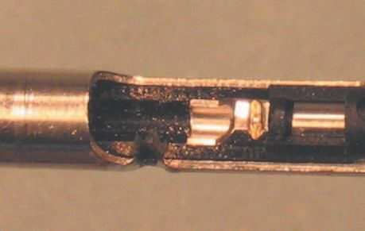

3.7 TT male connectors
275
Unlike almost every other tinning operation, we
don’t mind a little overfl ow here ( Figure 3.7.28 ).
All the excess will be fi led away shortly.
An extreme close-up of our notorious
(tinned) shield channel is shown in Figure 3.7.29 .
Notice that I ’ ve fi led past the metal of the
plug, into the black insulation section. This allows
the shield strands to feed directly out at a right
angle.
Figure 3.7.28 Tinned shield cup – 1.
Space is so tight inside the connector that I want
to pre-tin the high and low conductor solder
cups. This way, when I bring the solder-laden
conductor into position against the solder-
encrusted cup, they will bond immediately when
heated. That ’s the premise, at least. In Figure
3.7.30 I ’ m tinning the high cup.
Tin both cups the same way – with a thick fi lm
of solder, enough to provide ‘ wetting ’ action
against the solder on the conductors, but not so
much as to drip down and short. In Figure 3.7.31
I ’ ve tinned the cup, and am starting to gently
pull away the iron tip. You can see the solder
Figure 3.7.29 Tinned shield cup – 2.
sticking to the tip; as I pull away further, the
solder will fall back into a nice round blob (I hope).
Figure 3.7.30 Tinning high cup.
Figure 3.7.31 Tinning low cup.
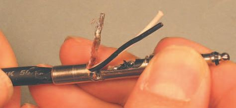

276
Audio Wiring Guide
Finally, all three solder cups are tinned and ready ( Figure 3.7.32 ). The black insulation shows a little melting, but there are no voids or solder bridges.
Brush off any loose particles. Leave any rosin you fi nd on the solder cups, but brush it away from other areas.
Figure 3.7.32 Tinning completed.
Insert the wire at the rear of the plug ( Figure 3.7.33 ). Pull the conductors toward the tip of the plug to avoid them wrapping around each other. Push the outer jacket as far into the rear of the plug as it will go by hand.
Using a pair of pliers, twist (rotate) the plug down onto the jacket
( Figure 3.7.34 ). Do this about a quarter turn at a time, checking
the conductors and untangling them, if necessary. There are two
objectives – to fi rmly seat the jacket in the plug, and also to line up the shield conductor strands with the solder channel we made for them.
Figure 3.7.33 Insert wire.
Figure 3.7.34 Twist plug onto jacket.
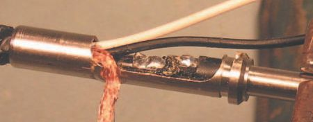


3.7 TT male connectors
277
The shield strands must go directly to the shield solder channel, and not overlap the high and low conductors. This is clearly shown in Figure 3.7.35 .
The fi gure shows the wire correctly positioned. See how the shield strands all go directly to the shield solder cup?
Figure 3.7.36 is the same as Figure 3.7.35, but from a slightly different angle.
All the shield strands fl ow neatly into the shield solder channel. Now to cut off the excess shield.
Figure 3.7.35 Wire in position – 1.
Figure 3.7.36 Wire in position – 2.
Snip! I just cut off the extra shield strands – I did it so fast you didn ’t even see it. Alright, I ’ m fi bbing – I missed a shot. But the result can be seen in Figure 3.7.37 ; the strands are cut close to the barrel of the connector, but with some excess still in place.
Since the solder point of the shield to the barrel is mainly what ’s going to hold this wire in place, we want to be generous with solder here. The shield strands will absorb a lot, making them stronger. Notice that I ’ m soldering almost vertically in Figure 3.7.38 . That way, any overfl ow will spill down the outside of the connector barrel rather than into the plug itself. In fact, a bit of blobby overfl ow is actually good here, since it will be fi led to conform.
Figure 3.7.37 Excess shield cut.
Figure 3.7.38 Solder shield strands.

278
Audio Wiring Guide
As can be seen in Figure 3.7.39 , the shield strands are well tinned, and there ’s a gorilla-strong connection between the shield and the barrel. But what about our old friend there, ‘ blobby overfl ow ’ ? Not to worry – they make big fi les too!
Figure 3.7.39 Completed shield solder.
There ’s nothing like a big, old, metal fi le to take care of that pesky overfl ow ( Figure 3.7.40 ). File gently, with a curving, circular motion. The goal is for the curvature at the solder point to match the curvature of the plug barrel itself.
Figure 3.7.40 File shield solder.


3.7 TT male connectors
279
Figure 3.7.41 Completed fi ling – 1.
Figure 3.7.42 Completed fi ling – 2.
Neat! The curvatures match exactly ( Figure 3.7.41 ). Now we can use either heat-shrink or a sleeve for the outside insulation of the TT plug.
Figure 3.7.42 shows the same detail from a different angle. See how the shield strands are fi lled with solder, but none has fl owed over onto the other parts of the plug? I ’ ll brush off the detritus, and start fi nalizing the high and low conductors.
I wish I could give you a fi xed length to cut – but I can ’t. It will vary with each connector you wire. In Figure 3.7.43 I ’ m using black for the low conductor, so I ’ ve cut it to match the distance to the low solder cup, with a smidgen more for a little curve.
Figure 3.7.43 Cutting low conductor.


280
Audio Wiring Guide
Figure 3.7.45 Stripping low conductor – 2.
Figure 3.7.44 Stripping low conductor – 1.
In this case, both the white and black conductors are electrically identical.
So you can choose either one for the low or high, but you must be consistent! If black is high at one end of your cable, make sure it ’s high at the other end too. Electrical convention in AC wiring is that black is low, but you ’ re not bound by law to follow that – only to be consistent in your work.
Since the TT is so small, the low conductor must be soldered in place before we can do any work on the high conductor.
Strip the low conductor (and the high one too)
back {1/16} inch ( Figure 3.7.44 ). Why such a small
amount? Because the insulation on cable tends
to shrink (or ‘ wick ’ ) back when the strands are
heated to be tinned. You ’ ll see this in the next
steps.
In Figure 3.7.45 it seems too small a strip, but
wicking (melt-back) will increase it greatly.
We need to use a technique called ‘ beading ’
here, where the tinned ends of the conductors
are loaded with extra solder ( Figure 3.7.46 ). This
forms (ideally) a grape- or bead-like shape –
hence the name. This technique is used where it
is not possible to feed the solder onto the
heated conductor. Instead, the conductor itself
Figure 3.7.46 Tinning low conductor.
must carry the solder as a ‘ payload ’ .


3.7 TT male connectors
281
The fi rst step in beading is to tin the end of the conductor. Sometimes it is possible to add the full payload of solder all at once. Often, however, it helps to let the tinning cool down, and then add the beading (build-up) as a second step. The following pictures show this process.
Figure 3.7.47 Tinned low conductor.
Notice in Figure 3.7.47 how much the insulation has wicked back? We still have to add the bead of solder in a second operation – but let it cool for a bit fi rst.
We are back again, with a fuller payload of solder, in Figure 3.7.48 . Melt just enough solder to form a bead at the end of the wire. Pull the iron away and let it cool undisturbed, or blow gently on it.
See the nice, shiny, round ball of solder in Figure 3.7.49 ? That ’s a good bead, ready to melt quickly. Now we have to position it close to the low solder cup.
Figure 3.7.48 Beading low conductor.
Figure 3.7.49 Low bead completed.

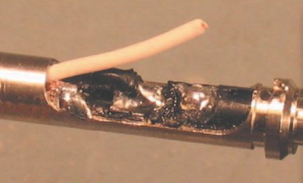
282
Audio Wiring Guide
Remember that curve I told you I wanted in the low conductor? Here it
is in Figure 3.7.50 , and the bead is resting in position on the low solder cup. Now I ’ ll press gently down with my fi nger on the insulation of the low conductor, and at the same time put my iron tip directly on the cup and solder bead. This is the ‘ before ’ shot with the bead still discrete.
Figure 3.7.50 Low bead positioned.
Figure 3.7.51 is the ‘ after ’ shot, with the bead soldered in place. There is a strong physical connection, and a slight arc in the conductor for fl exibility.
No, I didn ’t show you the naked act of soldering itself – but I ’ ll get another chance real soon.
Figure 3.7.52 is another ‘ after ’ shot, from a different angle. See how tight the connection is between the low conductor and the low solder cup?
Figure 3.7.51 Low bead soldered – 1.
Figure 3.7.52 Low bead soldered – 2.

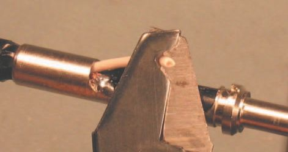

3.7 TT male connectors
283
Darn, I missed another shot here – I should show the high conductor being cut to length. And again, you have to measure the length yourself – each plug will be unique. Will you accept as logical that we have to cut to length before stripping? That I did so for us? Good! Then let ’s strip this conductor back {1/16} inch, just like the low one ( Figure 3.7.53 ).
Once again we have a strip of {1/16} inch, which will increase when tinned ( Figure 3.7.54 ).
Figure 3.7.53 Stripping high conductor.
Figure 3.7.54 Stripped high conductor.
As for the low conductor, this is a two-step process. Tin fi rst, allow to cool, then bead ( Figures 3.7.55 and 3.7.56 ).
Wow! This one happened to bead perfectly in one operation. Sometimes
you just get lucky. If you ’ re not so lucky, do the tin and bead in two steps.
Figure 3.7.55 Tinning high conductor.
Figure 3.7.56 Beaded high conductor.

284
Audio Wiring Guide
Remember that curve I told you I wanted in the low conductor? It ’s back!
I want it for the high conductor too. The bead is resting in position on the high solder cup. I ’ ll press gently down with my fi nger on the insulation of the high conductor, and at the same time put my iron tip directly on the cup and solder bead. Figure 3.7.57 is the ‘ before ’ shot with the bead still discrete.
Figure 3.7.57 Position high conductor.
Ah! Ken and I fi nally got it together to show you that molten moment of melding, when the iron tip hits the solder bead and the tinned cup at the same time ( Figure 3.7.58 ). Watch your fi ngers but if you do this right, 2–3
seconds of iron contact should be all that ’s needed.
Figure 3.7.58 Solder high conductor.


3.7 TT male connectors
285
The completely wired TT plug is shown in Figure 3.7.59 . Now all it needs is some outer insulation. The factory sleeve won ’t fi t over the wire – time for some heat-shrink!
Figure 3.7.59 Soldered high conductor – 1.
Figure 3.7.60 Soldered high conductor – 2.
Figure 3.7.60 shows the same detail from a different angle. See how
the high conductor curves around the low conductor to keep a low
profi le? It ’s important to keep the conductors as fl at as possible for this type of plug – they ’ re packed so tightly when in use.
Now I need some heat-shrink big enough to just fi t over the plug. Ah, got some, and it ’s clear, so you can see the details inside it – good! We want a long overlap past the point where the wire enters the plug ( Figure 3.7.61 ).
This overlap will help keep the wire in place, and adds durability. The exact length is not critical.
Figure 3.7.61 Sizing heat-shrink.


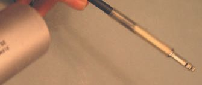
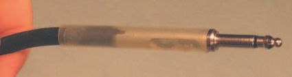
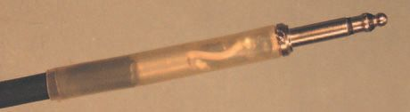
286
Audio Wiring Guide
In Figure 3.7.62 the fi rst layer of heat-shrink is in place but has not shrunk down yet. The shrinking process is taking place in Figure 3.7.63 . Yes, I know it’s blurry – but everything ’s moving here! I ’ m rotating the wire to distribute the heat, and also running back and forth along the length of the plug with the heat gun, to further distribute the heat. I have to do this to get a smooth, even shrink. So please be tolerant of minor imperfections.
Figure 3.7.62 First layer of shrink.
Figure 3.7.63 Shrinking fi rst layer.
Figure 3.7.64 shows the fi rst layer of heat-shrink, after heating. Looks good, but I think I want a second layer for reinforcement. Heck, that ’s easy now.
Figure 3.7.65 shows the second layer of heat-shrink in place, but not shrunk yet.
Here we go again. Rotate the wire, move back and forth with the heat gun.
Nice smooth shrink down. Figure 3.7.66 is blurry too – it ’s all still moving.
You probably thought we ’ d never get there, but here it is in Figure 3.7.67 , a fi nished male TT connector, ready to work for many years. But there ’s one last touch.
Figure 3.7.64 First layer shrunk.
Figure 3.7.65 Second heat-shrink layer.
Figure 3.7.66 Heat second layer.
Figure 3.7.67 Finished TT connector.
3.7 TT male connectors
287
Figure 3.7.68 Spraying with ProGold.
Figure 3.7.68 shows the outside of the connector being sprayed with
enhancer. Wipe off any overspray. I ’ m using Caig ProGold G5, and
recommend that you do too! It prevents aerobic corrosion – which degrades conductivity. It improves electrical contact on all metals used in electrical connections, and is especially good for low-power connections like guitar outputs and mating stage boxes. Most guitars have very low power output –
down in the microvolt range. At such a low level, any slight reduction in conductivity can be much more harmful than it would be at line-level or speaker-level. At higher power levels, the signal can cut through layers of (semi-conductive) corrosion.
Note: Caig Labs has recently changed the name from ProGold to DeoxIT
Gold. It ’s the same stuff. They also have some new products that are
interesting. More info about ProGold is on the Caig Labs website
(www.caig.com ).
That ’s it, folks. ‘ That ’s all she wrote ’ – or maybe I should say ‘ wired ’ . Now it’s time to whip out that VOM you bought after I suggested you do so in Section 1. If you really read the whole book, you ’ ll recall a mini-course in how to use it (the VOM) that was part of Section 2. You ’ ll even remember what VOM, or DVOM, stands for.
Test your work, check it for shorts and high-resistance solder points. If it all checks out, enjoy your new connections!
2.2
BNC male connectors
3.8
The BNC connector is commonly used for video and RF work. It ’s an
unbalanced connector, with only hot (tip) and ground (shield). Unlike its poor cousin, the F connector (covered in Section 3.9), the BNC uses a spiffy gold-plated pin for the tip contact. And rather than screwing down on the female with a lock-ring you have to spin and spin, the BNC has a twist-locking lock-ring that only takes a quarter turn to lock fi rmly.
These features make the BNC a better connector than the F connector if you have a choice of which type to install. It ’s a little more costly, but has much better longevity. It ’s also a little more complicated to assemble than an F connector, but not a whole lot.
You can ’t say that BNCs are soldered; instead they are crimped (carefully crushed) and, like the F connector, you need a good quality crimper to do the work. Buy, borrow or rent a heavy-duty metal crimper – ideally one with interchangeable jaws, so you can use it for both BNC and F crimping.
Cheap, fl imsy, plastic crimpers will ruin a lot of connectors for you.
Let ’s take a look at a fi nished BNC ( Figure 3.8.1 ), to see the fi nal product, before we go through the assembly steps.
Figure 3.8.1 Finished connector.
3.8 BNC male connectors
289
The especially alert among you will realize that this fi nished example is slightly different from the BNC we ’ ll be wiring. My point in showing it is that there are different types available, and the parts from one type may or may not fi t another type. So keep the parts for each model of BNC together, or you ’ ll be creating extra work for yourself.
Oh, and just to compound your confusion, BNCs come in two fl avors: 50
and 75 ohm. Figure 3.8.1 is a 50 ohm, as it has a plastic insulator. If there was no insulator, it would be the 75 ohm version.
You can fi nd a good discussion of which to use, where and why, at this URL: http://www.l-com.com/content/Tips.aspx – look in the ‘ Coaxial ’ section.
Since the crimping of both types is identical, I ’ m only going to show you the assembly of one type of BNC.
Looking at our example, we can see the free-spinning lock-ring, the center pin and, on this particular plug, two different levels of crimp at the rear of the connector, where the wire enters. There ’s a smaller diameter crimp on the wire itself, and a larger crimp around the body (barrel) of the shell.
This is unusual; most BNCs use only one crimp diameter. But it ’s important to understand that different models of BNC will require slightly different techniques. I can ’t show all the variations, so I ’ ll use the most common type and ask you to adjust your procedures if you work on different style BNCs.
The front of the BNC is shown in Figure 3.8.2 : on the left, we see the crimp ring; on the right, the body of this BNC connector and, in the center, a lovely, gold-plated center pin. Notice the center hole in the connector body. The pin is crimped to the center (hot) conductor of the wire, and then pushed through the center hole to seat it.
Figure 3.8.2 Front of BNC.
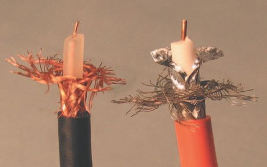
290
Audio Wiring Guide
See the split cylinder inside the lock-ring? Its function is to slide around the (metal) outer layer of the BNC female plug, making a fast, high quality electrical connection for the wire ’s shield (ground).
The rear of the BNC is shown in Figure 3.8.3 . What ’s different here? Not the crimp ring, not the center pin. Rather, I ’ ve turned around the connector body, so you can see the entry point for the wire. After the wire and center pin are in place, and the shield has been pushed up and over the cylinder that the wire enters, the crimp ring is put in place and crimped down. We ’ ll work our way through all these steps sequentially; I just want to give you a quick overview.
Figure 3.8.3 Rear of BNC.
Figure 3.8.4 Two coaxial wires.
Two typical examples of coaxial wire are illustrated in Figure 3.8.4 . Note the single inner conductor, with a thick insulator around it. Also note that the wires are of different diameter, so they need BNC connector shells with different diameters to fi t them properly. We ’ ll talk about that more in a minute, but for now I want you to observe that the wire on the left has only a braided shield conductor, but the wire on the right has an additional foil shield. This provides more complete shielding, at a bit more cost, and creates a stiffer wire.
We ’ ll be working with the single-shielded version, as it ’s the one that fi ts the BNC plugs I have at hand. Working with the double-shielded wire only adds the foil, which is treated as part of the braided shield.
3.8 BNC male connectors
291
Do unto the foil as you do unto the braided shield, at each step, and you ’ ll be fi ne. You can also sneak a quick look at the next section (3.9) for some pictures of foil-play.
BNC connectors and wire come in various sizes and standards. There ’s
the older RG-59U, the thinner (newer) RG-6U, and a bewildering array of other types and sizes. The important thing to check is that the diameter of the inner insulator and the diameter of the wire entry tube of the BNC
connector are matched. You shouldn ’t take some clerk ’s statement that
‘ They ’ ll fi t perfectly ’ as truthful – the clerk might not know. Peel back a bit of the shield and outer jacket, and physically check the fi t of the inner insulator to the wire entry point of the BNC connector shell.
While it is possible to strip wire for BNCs by hand, with a razor blade, the cutting is complicated enough that a specifi c BNC stripper will save you a lot of time. I do, however, give exact cut lengths later, so you can do the prep work with only a razor blade and some careful workmanship.
So ‘meet my little friend ’ – the BNC stripper ( Figure 3.8.5 ). The orange ring at the bottom of it pushes two rollers up, and forces the wire against three (very sharp) blades. By setting the blade depths carefully, you can basically do the entire strip in one quick series of operations. Let ’s look at some details.
Figure 3.8.5 BNC stripper.
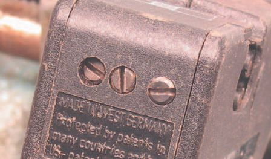

292
Audio Wiring Guide
The free-spinning rollers push the wire progressively up, so the blades cut deeper each time you rotate the stripper around the wire ( Figure 3.8.6 ). The orange cut depth ring has click stops, so you can advance it a little bit each time you spin the stripper around the wire. By cutting the wire deeper in small increments, you can get a very clean, accurate cutaway. Notice the graphic on the stripper at the top? It shows a stylized example of what a correct strip should like, with each layer of the wire removed an appropriate length.
Figure 3.8.6 Stripper rollers.
Figure 3.8.7 shows a close-up of the three stripper blades, set to increasing depths. They are set with adjustment screws – which brings us to Figure 3.8.8 .
Figure 3.8.7 Stripper blades.
Figure 3.8.8 Blade adjusters.

3.8 BNC male connectors
293
Logically enough, the three adjustment screws are at three different depths, to set the blades. You have to dedicate a few inches of coax wire to setting the blades for the exact wire batch you ’ re working with. Each batch of wire will have a slightly different blade setting for an optimal cut. Experiment until you get exactly the cut you need for the wire you ’ re working with; one size does not fi t all.
CDR is my shorthand for the orange ‘cut depth ring’, which is way too long a name to say too often. In Figure 3.8.9 I ’ m rotating it up toward the blades, leaving just enough space to lay in my wire. I ’ ve drawn a couple of crude arrows to illustrate the direction of rotation.
Figure 3.8.10 Adjust CDR – 2.
Figure 3.8.9 Adjust CDR – 1.
In Figure 3.8.10 I ’ ve pushed the CDR up so the wire is resting against both the rollers, and the blades, but no cut has been made yet. Next, we ’ ll start advancing the CDR and spinning the stripper around the wire several times.
Each type of wire will have a different resistance to the cut, and will need a different combination of CDR advance and stripper spin. You just have to
‘ feel it out ’ for the wire you ’ re working with.

294
Audio Wiring Guide
Figure 3.8.11 shows our fi rst time around the wire with the stripper. The arrows give a rough idea of the rotation. You can actually feel the blades slicing through the braid and insulation. Use this as a guide to how many rotations are needed before the next CDR advance. When the resistance
is gone, it ’s time to advance the CDR another click, and then spin around again.
Figure 3.8.11 Spin stripper – 1.
Figure 3.8.12 Spin stripper – 2.
Note the ridged part of the CDR in Figure 3.8.11 – the place you ’ d push against with your thumb to advance it. Before advancing, it was down at the base of the stripper. Here it ’s about halfway up, and we ’ ll keep advancing it a bit with each rotation. Each time, of course, the blades cut deeper, a little at a time.
Figure 3.8.12 shows the back of the spin, with some more arrows to
reinforce the concept. Once you get the hang of it, and the blades are set correctly, this series of actions can be done very quickly, with the entire strip taking less than a minute.
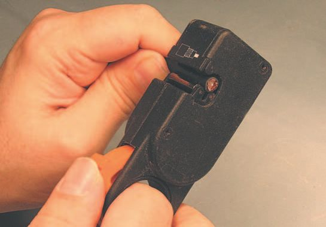
3.8 BNC male connectors
295
Notice the CDR position in Figure 3.8.13 – I ’ ve advanced it a couple of clicks, and now I get to take another spin, as it were.
Figure 3.8.13 Spin stripper – 3.
In Figure 3.8.14 I ’ ve advanced the CDR to its fi nal position – the blades are at their deepest cut. One or two more spins and I ’ m done.
Figure 3.8.14 Spin stripper – 4.

296
Audio Wiring Guide
Our multiply-cut wire is shown in Figure 3.8.15 . Now it ’s time to
remove all the cut-off braid and insulation. The next series of pictures illustrates this.
Figure 3.8.15 Finished cut.
In Figure 3.8.16 the fi rst bit of cut-off is removed. But here, we want the inner conductor, right? Just stay tuned.
Figure 3.8.16 Remove cut-off – 1.


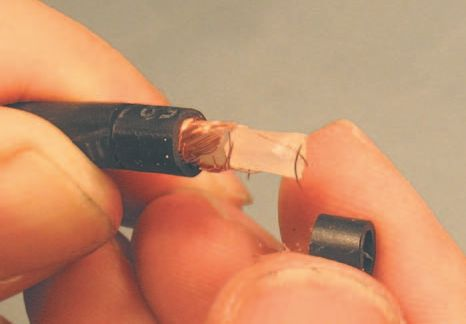
3.8 BNC male connectors
297
In Figure 3.8.17 the inner insulation has been deftly sliced by the blade with the deepest cut, and can be easily pulled off. In fact, as shown in Figure 3.8.18 , both the inner insulation and the cut-off from the next layer came away cleanly.
Figure 3.8.17 Remove cut-off – 2.
Figure 3.8.18 Remove cut-off – 3.
In Figure 3.8.19 the braid was not cut as cleanly; we have some strands that are longer than those that were cut by the stripper ’s blade. We have to fi x this, and justify all the braid strands to be the same length ( Figure 3.8.20 ). Cut back all the strands to be the same length as those cut by the stripper.
Figure 3.8.19 Remove cut-off – 4.
Figure 3.8.20 Justify strands.


298
Audio Wiring Guide
The fi nished strip is shown in Figure 3.8.21 . We ’ ve got {1/4} inch of neatly trimmed braid, another {1/4} inch of inner insulation, and {1/8} inch of bare center conductor. The masochistic among you might try to duplicate this with a razor blade. It can be done, but it ’s a lot slower.
Figure 3.8.21 Finished strip.
It ’s now time to crimp the center pin. But wait, for that we need a (good) crimper, right? We certainly do, and here it is ( Figure 3.8.22 )! This type of crimper can be used for a variety of plugs, including BNC, F and Ethernet connectors. Figure 3.8.23 shows different jaw-sets; the ones mounted in this picture are for BNC connectors. The Ethernet set is on the lower left, and the F connector set on the lower right. This crimper is versatile, durable, and has a powerful set of jaws! It ’s got a crushingly powerful personality and delights in crunching various plugs into obedient conformity.
Figure 3.8.22 The crimper.
Figure 3.8.23 Multiple jaw-sets.
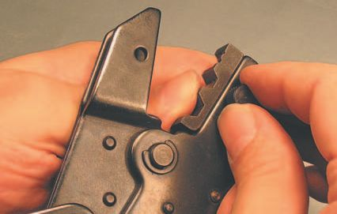

3.8 BNC male connectors
299
Speaking of those jaws, a crimper will only release after full compression, so avoid getting any part of your anatomy caught in the jaws . You will either have to let that part get squished, bloody, and mangled, or take the crimper apart to release yourself! The same goes for anything else you put in the crimper, so be careful! Powerful tools are always dangerous. Use them with respect and good judgment.
A close-up of the BNC jaws is shown in Figure 3.8.24 – note the different sizes for both the center pin and the crimp ring. Always start out with the larger size and work down, to avoid jamming the crimper.
Figure 3.8.24 Close-up of BNC jaws.
In Figure 3.8.25 I ’ m using the thumbscrews to mount the BNC jaws, so we can get down to some crimping. In Figure 3.8.26 the crimper is now set to play – let ’s start!
Figure 3.8.25 Mount BNC jaws.
Figure 3.8.26 BNC jaws ready.

300
Audio Wiring Guide
I ’ ve carefully trimmed back the center conductor, so it runs the full length of the space in the rear in the center pin, but still allows the base of the center pin to rest on the inner insulation for mechanical strength ( Figure 3.8.27 ). Note the little round hole in the crimpable area of the center pin?
See the center conductor through the little hole? That ’s what the hole is there for – so you can look and see if the center conductor is in position, and long enough.
Figure 3.8.27 Mount center pin.
Carefully crimp the center pin ( Figure 3.8.28 ). Start with the larger diameter crimper and work down, if needed. Make sure to crimp on the rear of the pin, and do not crimp on the front shoulder of the pin. If you do that, the shoulder will not lock into the BNC body, and you ’ ll get to cut away all your work and try again. Here are some pictures to show a correct crimp.
Figure 3.8.28 Crimp center pin.


3.8 BNC male connectors
301
Figure 3.8.29 Good crimp – 1.
Figure 3.8.30 Good crimp – 2.
Figure 3.8.29 is a front view of a good crimp. Note the position of the crimp on the center pin. Let ’s see this from another angle. A rear view of a good crimp is shown in Figure 3.8.30 – it ’s crushed just enough, not too much.
Now is a very good time to slide the crimp ring on, and move it far enough down the wire to be out of the way ( Figure 3.8.31 ). Do not forget this! If you mount the center pin and fi nd you forgot the crimp ring, you will then have to poke out the center pin – which weakens the pin ’s lock-in onto the BNC body.
Figure 3.8.31 Mount crimp ring.

302
Audio Wiring Guide
Push back the braid toward the outer insulation jacket of the wire
( Figure 3.8.32 ). This will permit the braid to be subsequently brushed forward over the rear of the BNC body, and then mashed down with the
crimp ring.
Figure 3.8.32 Push back braid.
Slide the inner insulation into the center of the BNC body ( Figure 3.8.33 ).
Align the center pin with the hole in the front of the BNC body, and push the pin through the hole.
Figure 3.8.33 Mount BNC body.

3.8 BNC male connectors
303
Gently pull on the center pin with a pair of pliers ( Figure 3.8.34 ). You should hear/feel a sharp ‘ click ’ when the pin snaps into place. When that happens, you ’ re done – don ’t pull any more.
Brush the braid forward toward the front of the connector ( Figure 3.8.35 ).
Figure 3.8.34 Pull center pin.
Figure 3.8.35 Brush braid forward.
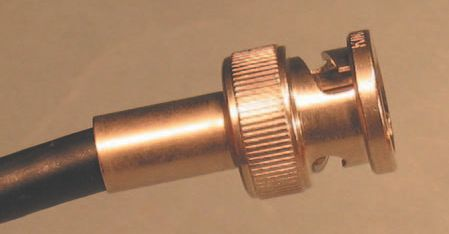


304
Audio Wiring Guide
Slide the crimp ring toward the front of the connector ( Figure 3.8.36 ). Push it as far forward as possible.
Figure 3.8.37 shows the crimp ring in position. We are now ready for a date with our crimper.
Figure 3.8.36 Mount crimp ring.
Figure 3.8.37 Ring in position.
The crimp ring is wider than the jaws of the crimper ( Figure 3.8.38 ). So the ring crimp has to be done in two parts. I like to crimp the rear fi rst, to lock the ring in position. Figure 3.8.39 shows the details of the fi rst crimp, to show the degree of compression.
Figure 3.8.38 Rear of crimp ring.
Figure 3.8.39 Rear crimp done.

3.8 BNC male connectors
305
In Figure 3.8.40 I ’ m caught right in the middle of the second ring crimp. Note that the crimper ’s jaws are not yet fully closed. Squeeze, squeeze!
Figure 3.8.40 Front of crimp ring.
Notice in Figure 3.8.41 that I was good and lined up the front and rear crimp. This BNC is done! But before taking it out for battle, there ’s one more step to do.
Figure 3.8.41 Ring crimp done.
306
Audio Wiring Guide
In Figure 3.8.42 the BNC connector is shown being sprayed with contact enhancer. Spray the tip and inside the lock-ring. Wipe off any excess. I ’ m using Caig ProGold G5 and you should too! It improves electrical contact on all metals used in electrical connections, and is especially good for low-power connections.
Figure 3.8.42 ProGold spray.
The signal level on a BNC connector can range from medium strong to very weak, so any help you can give those hard-working electrons will be greatly appreciated!
Note: Caig Labs has recently changed the name from ProGold to DeoxIT
Gold. It ’s the same stuff. They also have some new products that are
interesting. More info about ProGold is on the Caig Labs website
(www.caig.com ).
Now it ’s time to whip out that VOM you bought, after I told you to do so in Section 1. If you really read the whole book, you ’ ll recall a mini-course in how to use it (the VOM) that was part of Section 2. You ’ ll even remember what VOM, or DVOM, stands for.
Test your work and check it for shorts. If it all checks out, enjoy your new connections!
3.9
The F connector is commonly used for video and RF work. It ’s an
unbalanced connector, with only hot (tip) and ground (shield). Unlike most connectors, this one uses the center conductor of the coaxial cable as a pin contact. This creates long-term problems, as the center conductor is bare copper and corrodes easily. So if your old F connector goes intermittent, scrape the oxidation off the center conductor and try it again.
Don ’t ask me what the ‘ F ’ stands for, unless it ’s the ‘ f’ expletive uttered by technicians when the center conductor corrodes and the contact degrades.
Perhaps it stands for ‘ fairly ’ , as the F connector is fairly cheap, fairly simple to wire, and fairly reliable.
Since the F connector gets a passing, if not an outstanding, grade,
it’s a common connector on TVs, some video games, closed-circuit
camera installations, and other places where video or RF wiring is
needed.
The F connector is similar in use to the BNC connector covered in
Section 3.8, and the same type of crimper (with different jaws) is used for both.
The differences in usage between BNC and F connectors are discussed at these URLs:
● http://www.l-com.com/multimedia/tips/tip_75ohm.pdf
● http://www.l-com.com/multimedia/tips/tip_50ohm.pdf
Typically, the 50 ohm connectors are BNC, but the 75 ohm ones are often a mixed bag of BNC, F and RCA connectors.
Let ’s look at a few pictures to show you what I ’ m talking about.


308
Audio Wiring Guide
Figure 3.9.1 shows the rear of the connector,
where the wire is inserted. Note that the
construction is basically two tubes or cylinders.
They are connected at the front of the connector
and left open at the rear, to permit a pushdown
onto the wire. At the front end of the connector,
there is a captive, threaded ring, which is used
to secure the male connector to the female. The
ring spins freely, so it can be tightened by hand.
This is shown more clearly in Figures. 3.9.2 and
3.9.3 .
In Figure 3.9.2 we can see the threading in the
Figure 3.9.1 Connector rear – 1.
free-spinning lock-ring, as well as the hexagonal
ridges on the ring to make using it easier.
The circular ridges on the body (barrel) of the
connector add strength to it when it ’s crimped
(gently crushed) down onto the wire.
Figure 3.9.3 is another view of the connector,
from a slightly different angle and with different
lighting. I hope that from these two views, and
my deliberately detailed description, you will
now have a clear understanding of the anatomy
of a male F connector shell. The clever part of its
design is that there are only two parts – the shell
and the wire itself. The less clever part is,
as mentioned, the use of bare copper for a
Figure 3.9.2 Connector front – 1.
contact pin.
Figure 3.9.3 Connector front – 2.

3.9 F male connectors
309
Figure 3.9.4 provides one last look at the rear of the connector, carefully lit, so you can see that the space between the inner and outer tubes (cylinders) extends all the way down to the front of the connector.
Figure 3.9.4 Connector rear – 2.
Figure 3.9.5 shows how the shell is used. It has been forced down,
over some carefully prepped wire, so that the center conductor, and its surrounding insulation, are properly positioned. Notice that the body of the connector is still round. This means the connector has not yet been crimped, and it ’s easy to pull the shell out of correct alignment with the wire if you mishandle it. Be gentle.
Figure 3.9.5 Wire in place.
310
Audio Wiring Guide
Figure 3.9.6 Two coaxial wires.
Two typical examples of coaxial wire are shown in Figure 3.9.6 . Note the single inner conductor, with a thick insulator around it. Also note that the wires are different diameters, so they need F-connector shells with different diameter ‘ inner ’ tubes to fi t them properly. We ’ ll talk about that more in a minute, but for now I want you to observe that the wire on the left has only a braided shield conductor, but the wire on the right has an additional foil shield. This provides more complete shielding, at a bit more cost, and creates a stiffer wire.
We ’ ll be working with the double-shielded version, as it ’s the one with a few extra steps. For wire that has only a braided shield, just omit the steps needed to deal with the foil shield.
F connectors and wire come in various sizes and standards. There ’s the older RG-59U, the thinner (newer) RG-6U, and a bewildering array of
other types and sizes. The important thing to check is that the diameter of the inner insulator and the diameter of the inner tube of the F connector are matched. You shouldn ’t take some clerk ’s statement that ‘ They ’ ll fi t perfectly ’ as truthful – the clerk might not know. Peel back a bit of the shield and outer jacket, and physically check the fi t of the inner insulator to the inner barrel of the F-connector shell. See Figure 3.9.5 for an example of a correct fi t.
There are also a number of different designs of F-connector shells on the market. I can ’t show all of them to you. The example I use is for the most common one. Use it as a basis for your own work if you are dealing with a type of F connector that is slightly different in its construction.
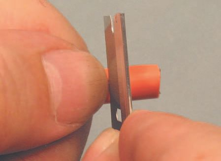

3.9 F male connectors
311
There are also ‘ twist-on ’ F connectors on the market – don ’t use them. The F connector is mediocre enough without using a type that was developed to avoid the cost of buying or renting a crimper. The ‘ twist-on ’ type is both physically and electrically weaker.
For the type of F shell I ’ m using, I need to start by cutting away the outer insulating jacket (in this case, the orange covering), for a length of {3/8}
inch ( Figure 3.9.7 ). Measure the distance, and put your thumb against the outer jacket to guide a razor blade to the exact spot you need, as shown in Figure 3.9.8 .
Figure 3.9.7 First cut – 1.
Figure 3.9.8 First cut – 2.
Place the razor blade in position. Keeping the
blade at a right angle (perpendicular) to the
wire, spin the blade gently around the wire to
slice through the outer jacket. Do this lightly, so
you do not cut any of the braided strands of the
shield below the outer jacket.
If you ’ ve been good, and cut gently, you
should now have a thin slice through the outer
jacket, that goes completely around the wire
( Figure 3.9.9 ). If the outer insulation is not stuck
to the strands of the shield, you can just pull
the {3/8} inch piece of outer jacket off. If the
jacket adheres to the shield strands, go on to
the next step.
Figure 3.9.9 First cut – 3.

312
Audio Wiring Guide
Only if needed, make a second cut in the outer jacket – from the point of the fi rst cut to the end of the wire ( Figure 3.9.10 ).
Figure 3.9.10 Second cut.
Peel away the {3/8} inch bit of outer jacket and discard it ( Figure 3.9.11 ). The next step is to cut back the outer shield.
Figure 3.9.11 Remove outer jacket.
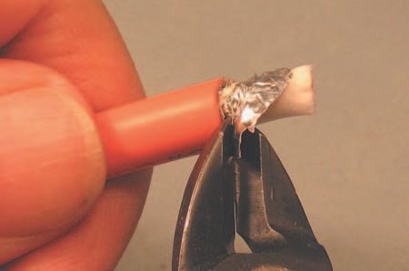
3.9 F male connectors
313
Cut away the braided shield ( Figure 3.9.12 ). Cut as close to the outer jacket as possible. Don ’t worry if you have to make a couple of ‘ passes ’ around the wire to get a tight, clean cutaway.
Figure 3.9.12 Remove shield – 1.
If you have the mixed blessing of an inner foil shield, remove it as well ( Figure 3.9.13 ). The same concept applies – keep the cutaway as tight as possible, and don ’t be afraid to go back and clean it up.
Figure 3.9.13 Remove shield – 2.
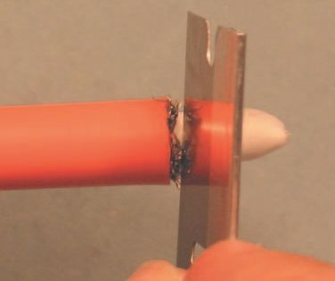
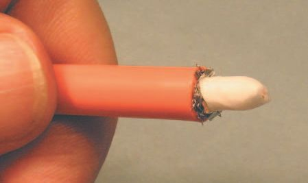
314
Audio Wiring Guide
Figure 3.9.14 shows the wire after the shield is cut away. I still have to clean up the fragments of shield that are left, but I ’ ll wait to do that until after the next cut. Why? Well …
The next step is to cut the inner insulator back ( Figure 3.9.15 ), which will also leave more room to remove those pesky nubbins left over from removing the shield. Slice gently and try not to score the inner conductor.
After cutting it loose, remove the {3/8} inch piece of inner insulator.
Figure 3.9.14 Remove shield – 3.
Figure 3.9.15 Remove inner insulator.
Wiring is iterative – you get to keep (re)doing it until you get it right. That ’s OK – it ’s just part of the process. In Figure 3.9.16 I ’ m cleaning up the loose strands and spoodge left over from my rough cut-off of the shield. I ’ ll have another go at the inner insulator as well, to make the razor cut across it nice and even.
Figure 3.9.16 Trim shield more – 1.
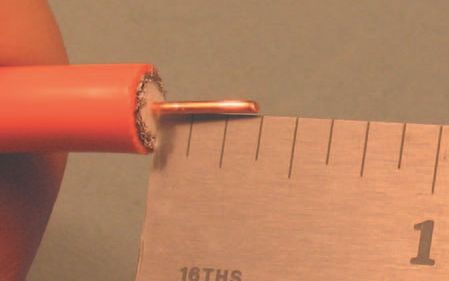
3.9 F male connectors
315
Almost done trimming! Any one of those loose strands you can see in
Figure 3.9.17 is a potential short. So I have one more pass at trimming this connector’s ‘ hair ’ before I can go on to the next step.
Figure 3.9.17 Trim shield more – 2.
Oops, almost slipped one by you here. Look carefully at the shield in Figure 3.9.18 and you ’ ll see it has fi nally been trimmed into submission. All this sounds very tedious – trim, retrim, re-retrim. But once you get the hang of it, each operation only takes a few seconds. I now have {3/8} inch of bare, happy, inner conductor, my shield strands are snipped snugly and the inner insulator is now neatly nipped fl ush across. All is joyful, and we ’ re ready to proceed to the next trim action.
Figure 3.9.18 Trim 1 fi nished.

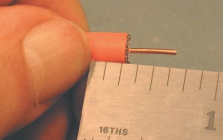
316
Audio Wiring Guide
Measure back {1/4} inch from the edge of the fi rst trim ( Figure 3.9.19 ). Here, we will repeat the exact same steps I showed you for the fi rst trim of the outer jacket (to be exact, Figures 3.9.8–3.9.11 ). That is, lightly cut the outer jacket and remove the {1/4} inch piece. Then cut away the shield, up to the cut-off of the outer jacket. Figure 3.9.20 shows the jacket cutaway.
Figure 3.9.19 Trim 2 measure.
Figure 3.9.20 Trim 2 outer jacket.
Just as we did before, slice the outer jacket delicately and remove the
{1/4} inch piece. If you ’ re lucky, you can just pull it off without a second cut.
If not, cut it as in Figure 3.9.10 .
Cut away the shield, both braided and foil ( Figure 3.9.21 ). This will leave a
{1/4} inch ‘ shoulder ’ of the inner insulator. It is this shoulder that goes down the center tube of the F-connector shell, supporting and insulating the center conductor. Form it carefully.
Figure 3.9.21 Trim 2 cut shield.
3.9 F male connectors
317
Mea culpa. I should have a picture of the fi nished trim. But I messed up, and Ken (my photographer) is not around. So the little drawing in Figure 3.9.22
is to try and make amends. This is a simple 2-D drawing of our admittedly 3-D wire, where the big orange part is the outer jacket, the white part is our
{1/4} inch shoulder of inner insulation, and the thin copper-colored part at the right is, you guessed it, the inner (copper) conductor. And look, not a stray strand of shield in sight. Nice trim job!
Figure 3.9.22 Cross-section.
The wire is now ready for the F-connector shell to be attached and crimped.
But to crimp (crush in a controlled manner) we need a crimping tool, right?
We sure do! So if I ’ ve got the quote right, ‘ Let me introduce you to my little friend … ‘ ( Figure 3.9.23 ).
Figure 3.9.23 The crimper.
This type of crimper can be used for a variety of plugs, including BNC, F
and Ethernet connectors. The Jaw-sets mounted in Figure 3.9.23 are for BNC connectors.
This crimper is versatile, durable, and has a powerful set of jaws! It ’s got a crushingly powerful personality, and delights in crunching various plugs into obedient conformity!

318
Audio Wiring Guide
Speaking of those jaws, a crimper will only release after full compression, so avoid getting any part of your anatomy caught in the jaws . You will either have to let that part get squished, bloody, and mangled, or take the crimper apart to release yourself! The same goes for anything else you put in the crimper, so be careful! Powerful tools are always dangerous. Use them with respect and good judgment.
To be utterly clear, I ’ ve drawn two arrows pointing to the thumbscrews on the opposite side of the crimper ’s jaws in Figure 3.9.24 . These thumbscrews are removed and replaced to change jaw-sets. In fact, I did change the jaw-sets – the ones in this picture are for BNC work. Just trying to keep you alert!
Figure 3.9.24 Jaw-set
thumbscrews.
Figure 3.9.25 shows a cornucopia of jaw-sets! The BNC set is mounted, the Ethernet set is on the lower left, and the F-connector set on the lower right.
Figure 3.9.25 Multiple
jaw-sets.

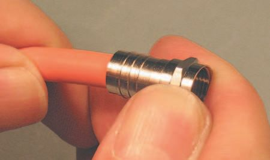
3.9 F male connectors
319
In Figure 3.9.26 I ’ m removing the BNC jaws, so I can load the F jaws (jaws of F?).
OK troops, the F jaws are locked and loaded ( Figure 3.9.27 ). Time to rock and roll!
Figure 3.9.26 Removing jaw-set.
Figure 3.9.27 F jaws installed.
Take the F shell, and push it fi rmly down onto the prepped wire ( Figure 3.9.28 ). The goal is to wedge the inner tube of the shell between the inner insulator and the shield. This, and the next operation, may require a little elbow grease, but not too much. Let the shoulder of the inner insulator slide down inside the inner tube of the F shell toward the front of the connector.
Then keep going.
Figure 3.9.28 Push shell on wire.

320
Audio Wiring Guide
Push the wire up into the connector – or push the connector down. Or a bit of both. A little wriggling and twisting often helps ( Figure 3.9.29 ). You will know that the wire is correctly positioned when the inner insulator ’s shoulder is fl ush with the front of the inner tube in the F shell. This is shown in Figure 3.9.30 .
Figure 3.9.29 Seat shell on wire.
Figure 3.9.30 Correct positioning.
Remember this one? But now it makes (I hope) a lot more sense. As
described, the inner insulation is fl ush with the front of the F shell ’s inner tube. This connector is ready for his date with the crimper.
In Figure 3.9.31 the F shell is in the crushing embrace of our crimper. Ow, that hurts! There are several caveats here. When in doubt, start with the widest jaw setting and work your way down! You can always crimp more, but clearing the F shell out of the crimper, when you ’ ve caught it in a too-small jaw space, will raise your blood pressure exponentially.
Figure 3.9.31 First crimp.

3.9 F male connectors
321
The same applies to making sure that you are crimping on the crimpable area of the F shell. There is sometimes a small section just after the lock-ring that is too thick to crimp. It will also give you severe agitation if you bite down on it (or the lock-ring itself) and fi nd it too tough to crimp.
Note that I ’ m crimping fi rst as close to the front of the F shell as I can.
Then I ’ ll move the F shell to the right, and crimp again to fi nish it. This is mandatory, as the F shell is wider than the crimper ’s jaws.
In Figure 3.9.32 I ’ ve moved the F shell to the right, so that the uncrimped part at the rear is now inside the crimper ’s jaws. A second compression stroke and the connector is done!
Figure 3.9.32 Second crimp.
Our fi nished male F connector is shown in Figure 3.9.33 . Isn ’t he handsome?
Note how the marks from the two crimps line up, and the inner conductor extends past the lock-ring – its length is not too critical. Just one last operation to do.
Figure 3.9.33 Finished connector.
322
Audio Wiring Guide
In Figure 3.9.34 the F connector is being sprayed with contact enhancer. Spray the tip and inside the lock-ring. Wipe off any excess. I ’ m using Caig ProGold G5 and you should too! It improves electrical contact on all metals used in electrical connections, and is especially good for low-power connections.
Figure 3.9.34 ProGold spray.
The signal level on an F connector can range from medium strong to very weak, so any help you can give those hard-working electrons will be greatly appreciated!
Note: Caig Labs has recently changed the name from ProGold to DeoxIT
Gold. It ’s the same stuff. They also have some new products that are
interesting. More info about ProGold is on the Caig Labs website
(www.caig.com ).
Now it ’s time to whip out that VOM you bought, after I told you to do so in Section 1. If you really read the whole book, you ’ ll recall a mini-course in how to use it (the VOM) that was part of Section 2. You ’ ll even remember what VOM, or DVOM, stands for.
Test your work and check it for shorts. If it all checks out, enjoy your new connections!
120 VAC (mains voltage) measurement ,
about BNC connectors , 288–9
93
BNC stripper tool , 291–3
braid trimming , 296–7
AC power see Balanced AC (electrical)
center pin crimping , 298–301
power (BACP)
component parts , 289–90
AC voltage measurement , 93
crimp ring crimping , 305
Acoustical survey , 38
crimp ring preparation , 301–4
Air-conditioning, survey , 38
enhancer treatment , 306
Architectural survey , 38
inner insulation stripping , 297
single/double shield versions , 290–1
Balanced AC (electrical) power (BACP) ,
wire stripping , 294–6
103–6
BNC stripper tool , 291–3
about BACP , 103–6
Braided strand shielded wire , 42
advantages , 110–11
Burnt insulation , 76
basic principles , 107–9
cost issues , 105
Caig home page , 131
Equi Tech , 106–7
Cleaning after soldering , 69
grounding confi gurations for , 111
Cold solder joints , 75–6
and power conditioners , 105
Conductors, defi nition , 4
star ground comparisons , 112–13
Connectors, purchase lists for , 41
Balanced/unbalanced audio , 96–103
Containers for supplies , 30
about audio signals , 96–7
Craig Labs ProGold/DeoxIT gold
about balanced signals , 97 , 100–3
enhancer , 156 , 178 , 200–1 , 219 ,
about unbalanced signals , 97
240 , 261 , 287 , 306 , 322
guitar plugs , 98–100 , 101
Crimping tools , 298–301 , 317–19
noise pick up issues , 101
with BNC connectors , 298–301
Bantam plugs see TT male connectors
with F male connectors , 317–19
Battery testing , 94–5
good crimps , 301
Beads/beading , 77–82
jaw sets , 299 , 318
beading conductors , 79–80
safety , 299 , 319
completing the connection , 82
Current measurement , 83–4
and tinning conductors , 78–9
see also DVOM
tinning connectors , 80–1
see also under the various connector
DC voltage measurement , 94
types
De-fl uxing/de-fl uxers , 69
BNC connector tips suppliers , 131
DeoxIT gold/ProGold (Graig Labs)
BNC male connectors , 288–306
enhancer , 156 , 178 , 200–1 ,
50 ohm/75 ohm versions , 289
239–40 , 261 , 287 , 306–7 , 323
Index
De-soldering , 63–8
shell crimping , 317–19 , 320–1
guitar plugs , 66–8
shield removal , 313–14
solder cups , 63–6
shield trimming , 314–15 , 316
DMM (digital multi-meter) , 83
wire types , 310
see also DVOM (Digital volt-ohm-
Files (metal) , 17
milliameter)
Floor plans , 33 , 34
Drain (shield) conductor , 4–5
Flush-cutting wire cutters , 13
DVOM (Digital volt-ohm-milliameter) ,
Foil-shielded wire , 41 , 42
83–95
Freeware spreadsheets, star sources , 130
120 VAC (mains voltage)
measurement , 93
Gnumeric spreadsheet , 115 , 126
basic measurements , 83–4
available from , 130
battery testing , 94–5
Grounding confi gurations:
current measurement , 83–4
for BACP , 111
DC voltage measurement , 94
BACP/star confi guration comparisons ,
option buttons , 85–6
112–13
REL (relative) button , 90
ground wires , 7
resistance measurement , 83 , 88–92
star grounding , 7 , 111–12
rotary function selector (RFS) , 86–8
Grounding/ground wires, star
safety issues , 84
grounding , 7
test leads , 87–8
Guitar plug female connectors , 157–78
Dykes (diagonal side-cutters) , 13
about female guitar plugs , 157–9
conductors stripping , 167
Electrical measurement see DVOM
conductors tinning and beading ,
(Digital volt-ohm-milliameter)
169–70
Electrical power see Balanced AC
conductors to tab soldering , 173–4
(electrical) power (BACP)
conductors trimming , 165–7
Enhancer , 178 , 200 , 219 , 240 , 287 , 306 ,
drain shield braid fi nishing , 175–6
322
drain shield braid soldering , 175
Equi Tech , 106–7
drain shield braid unbraiding , 163
links from AWG , 130
enhancer treatment , 178
see also Balanced AC (electrical)
mono and stereo plugs , 158
power (BACP)
outer jacket stripping , 160–1
ESD (electrostatic discharge) safe
shell placing , 170 , 177
irons , 8
solder tabs tinning , 172
Excel, Microsoft , 115
yoke crimping , 176–7
Expansion issues , 38
Guitar plug male connectors , 135–56
about guitar plugs , 135
F male connectors , 307–22
conductors stripping , 145
about F male connectors , 307
conductors tinning , 146
components parts , 308–9
conductors to tabs soldering , 146–50
connector types , 310–11
conductors trimming , 144–5
enhancer treatment , 322
enhancer treatment , 155
inner insulator stripping , 314
metal shell fi xing , 155
outer jacket stripping , 311–12 , 316
miniature version , 135
325
mono and stereo plugs , 135–6
conductor lengths/trimming , 185
outer jacket stripping , 137–9
conductor positioning/soldering , 192–3
shield strands to yoke soldering , 151
conductor stripping , 186
shield strands unbraiding/preparing ,
drain conductor preparing/soldering ,
139–43
193–6
strain relief tinning , 143
enhancer treatment , 200
yoke crimping , 153–4
foil shield trimming , 183–4
yoke preparation , 150
outer jacket stripping , 182–3
Guitar plugs, and balanced/unbalanced
solder tab preparation , 189
audio , 98–100 , 101
solder tab tinning , 190
solder tabs insulating , 199
Harnesses , 4–5
strain relief arm tinning , 190–1
Heat-shrink:
strain relief yoke fi tting , 197
good practice with , 22–3
wire suitable for , 181
plastic tubing , 12 , 20
Mogami two-conductor shielded wire ,
shrink guns , 12 , 23
160 , 162
Monster cable, connecting to guitar
Iggy’s imaginary installation , 36–9
plugs , 138 , 139 , 141 , 145
Information:
Monster two-conductor shielded cable ,
for Iggy’s imaginary installation , 36–9
267
needed for planning , 34–5
Mounting requirements , 37–8
organizing , 30–2
Multi-pair wire, stripping , 43 , 51–7
see also Planning ; Resources, links
Mylar foil shielded wire , 41–2
from AWG
Internet links see Resources, links from
Neutrik TT male connectors , 265
AWG
Neutrik XLR connectors , 243
Noise pick up, balanced unbalanced
Jacket slitter (home made) , 19–20 , 53
audio , 101
Job survey , 32–4
Nomenclature , 3–4
Labels see Wire labels
Open Offi ce for spreadsheets , 115
Lighting , 28
available from , 130
Lights , 19
Planning , 30–6
Material purchase lists , 40–1
fl oor plans , 33–4
Measuring tapes , 18
information breakdown , 32–4
Miller (type) wire strippers , 10–11 , 43
information needed , 34–5
suppliers , 129
job survey , 32–4
Mini-female guitar plug (MFGP)
methods , 31
connectors , 179–80
organizing information , 30–2
Mini-male guitar plug connectors
responsibilities, division of , 31–2
(MMGP) , 179–201
Pliers , 11
about MMGPs and MFGPs , 179–80
Power:
barrel fi tting , 188 , 199
draw calculations , 37
conductor beading , 186–8
survey , 38
Index
Power conditioners , 105
Miller (type) wire strippers , 129
ProGold/DeoxIT gold (Graig Labs)
reference links , 132
enhancer , 156 , 178 , 200–1 , 240 ,
silver solder suppliers , 130
260 , 287 , 306 , 322
soldering iron tip cleaning , 129
Third Hand vise suppliers , 130
RCA female connector , 220–40
tools/suppliers/gear , 131–2
about RCA female connectors , 220–1
wire label suppliers , 130
barrel fi tting , 228 , 239
Rulers, precision , 18
drain conductor soldering , 234–7
enhancer treatment , 240
Safety:
foil nicking/removal , 224–6
crimping tools , 298–9 , 318
high conductor measuring/cutting ,
with DVOMs , 84
229–30
safety glasses , 58
high conductor stripping/tinning ,
while beading , 186
230–1
Screwdrivers , 15–16
high conductor/yoke soldering , 232–4
Service loops , 39–40
outer jacket stripping , 223–4
Shields (Drain conductors) , 4–5
strain relief crimping , 237–8
braided shield wires , 5–6
unused conductor issues , 225
spiral shield wires , 5–6
unused conductor removal , 227
Solder:
yoke tinning , 232
rosin core vs. acid core , 58
RCA male connectors , 202–19
silver solder suppliers , 130
about RCA male connectors , 202–3
sources of , 58
barrel fi tting , 212 , 219
for tinning , 58
connector tinning , 212–14
Solder cups:
drain conductor soldering , 216–17
de-soldering , 63–6
enhancer treatment , 219
inserting/soldering conductor strands ,
foil nicking/removal , 206 , 208
62–3
high conductor measuring/cutting ,
tinning (fi lling) , 60–2
210–11
Solder suckers , 16
high conductor stripping/tinning ,
Solder-wick , 16–17
211–13
Soldering, good/bad practice , 73–82
high conductor/connector soldering ,
burnt insulation , 76
214–15
cold solder joints , 75–6
outer jacket stripping , 204–5
exposed metal , 74
strain relief crimping , 218
a good example , 77
unused conductor issues , 207
insulation too deep , 75
unused conductor removal , 209
too little solder , 74
Resistance measurement , 83 , 88–92
too much solder , 73
see also DVOM
see also Beads/beading; also under
Resources, links from AWG , 129–32
the various connector types
BNC connector tips suppliers , 131
Soldering irons:
Caig home page , 131
tip cleaner products suppliers , 129
Equi Tech links , 130
see also Temperature-controlled (T-C)
freeware spreadsheets , 130
iron
327
Soundproofi ng, survey , 38
sponge-type cleaners , 9–10
Spiral strand shield wire , 42
Weller irons , 8
Sponge-type iron cleaners , 9–10
Third Hand vises , 14–15
Spreadsheets , 114–28
suppliers , 130
cells , 115
Tie-wraps , 26–8
attribute changing , 116
Tie-wrap guns , 12–13
columns , 115
Tinning (fi lling) solder cups , 60–2
examples:
with beading , 78–9
guitar effects rack (Samsrax) ,
good practice , 61–2
117–25 , 127–8
Tinning wire , 57–60
hotel TV service , 116–17
good practice , 59–60
Excel , 115
safety glasses, use of , 58
freeze/unfreeze panes function , 126
solder for , 58
Gnumeric , 115 , 126
Tools required , 8–18
Open Offi ce , 115
cost issues , 18
rows , 115
fi les (metal) , 17
sheets , 115
heat shrink gun , 12
show/hide feature , 126
measuring tapes , 18
sort by function , 126
pliers , 11
sum function , 122 , 125
rulers, precision , 18
Star grounding , 7 , 111–12
screwdrivers , 15–16
BACP comparisons , 112–13
solder suckers , 16
Strands , 4
solder-wick , 16–17
Strippers , 10–11 , 43
soldering iron sponge , 10
BNC wire stripper , 291
temperature-controlled (T-C) iron , 8–9
Miller wire strippers , 10–11 , 43
tie-wrap guns , 12–13
stripper suppliers , 129
vises , 13–15
Stripping wire , 41–51
volt-ohm-milliameter (VOM) , 15
braided shield unbraiding , 47–8
wire cutters , 13
equalizing (justifying) wire lengths , 56
wire strippers , 10–11
foil removal , 46
Tools to build , 19–20
inner conductor trimming/stripping ,
jacket slitter , 19–20
50
lights , 19
insulation removal , 48–9
TT male connectors , 263–87
jacket removal , 43–6 , 52–5
about TT connectors , 263–5
jacket stripper , 52–5
conductors soldering , 282 , 284
multi-pair wire , 51–7
conductors temporary wrapping , 271
single conductors , 43–51
conductors tinning/beading , 280–1 ,
spiral strand removal , 47
283–4
conductors trimming/stripping , 280 ,
Temperature-controlled (T-C) irons , 8–9
283
cleaning , 9–10
enhancer treatment , 287
ESD (electrostatic discharge) safe
heat shrink fi tting , 285–6
irons , 8
insulation sleeve issues , 265
holders for , 9
jacket carving to fi t plug , 272–3
Index
TT male connectors ( continued )
Wire cutters , 13
Monster two-conductor shielded
dykes (diagonal side-cutters) , 13
cable , 267
fl ush-cutting , 13
Neutrik version , 265–6
Wire labels , 23–6
outer jacket stripping , 265–7
about wire labels , 23
plug cups/channel tinning , 274–6
home made , 25–6
plug solder channel fi ling , 273
Panduit labels , 24–5
shield soldering at twist point , 269–70
Radio Shack labels , 23
shield soldering to plug , 277–8
suppliers , 130
shield unbraiding , 268
Wire strippers see Strippers
Wire stripping see Stripping wire
Unbalanced audio see Balanced/
Wiring:
unbalanced audio
material purchase lists , 40–1
preparation for , 39–41
VAC (mains voltage) measurement , 93
service loops , 39–40
Ventilation , 29
Workstations , 28–9
Vises:
small portable , 13–14
XLR female and male connectors ,
third hand , 14–15 , 130
241–62
Volt-ohm-milliameters (VOMs) , 15
about XLR connectors , 241
Voltage measurement , 83
boot fi tting , 253 , 261–2
120 VAC measurement , 93
conductor/connector soldering , 254–6
DC voltage measurement , 94
conductors measuring/cutting , 247–9
see also DVOM
conductors stripping , 250
conductors tinning , 251–2
Weller soldering irons , 8
connector cups tinning , 252
West Penn type 291 studio insulation
drain conductor/connector soldering ,
wire , 181
256–7
Wire:
enhancer treatment , 260
about wire , 3–4
foil nicking/removal , 246–7
braided strand shielded wire , 42
foil shield insulating , 258–9
foil-shielded wire , 42
Neutric model , 243
multi-pair wire , 43
outer jacket stripping , 244–6
spiral strand shield wire , 42
pin confi gurations , 241–2
see also Tinning wire
strain relief fi tting , 253 , 261–2